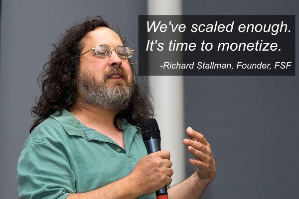

![[A GNU head]](index_files/heckert_gnu.png) GNU Operating System
GNU Operating SystemGNU is the only operating system developed specifically to give its users freedom. What is GNU, and what freedom is at stake?
$150 million investment from Andreessen Horowitz!
We are extremely excited to announce our new funding from some long time friends in venture capital, Andreessen Horowitz. They lead a $150 million dollar private equity round at a $52 billion dollar valuation, which we will use to start generating revenue and take our software to the next level.

As part of this deal, we will begin to add per-use fees to many of the popular GNU software we maintain, such as "ls", "dd", "cat", "grep", and many more. You can check out our pricing update and documentation on Github. Supported tools now include a "--pricing" flag so you can keep track of how much you owe us. For example, you can type "gcc --pricing" to get the amount you owe from compiling all those continuous integration deployments.
"GNU is sitting on a hundred billion dollar opportunity, and I'm really excited they are capitalizing on it."
-Sam Altman, YCombinator
Thanks very much to all of our current contributors that have made this step possible. If it weren't for your hard work, we wouldn't be able have such an incredible position in the market and rich go-to-market strategy. As part of this fundraising, we will be setting aside 10% of the investment to give back to the community that have made us so very, very happy.
"They got embedded in all the huge enterprise companies on the backs of volunteers! Now they can flip on the revenue stream. I really respect Richard for his cutthroat business strategy."
-Larry Ellison, Oracle
Unfortunately, some long time friends in the Linux community will not be joining us in our journey, namely the Linux kernel, so we will be using $50 million from this funding to complete the GNU Hurd kernel on an accelerated timeline so that our current users don't experience any interruption of service.
What is GNU?
GNU is an operating system that is free software—that is, it respects users' freedom. The development of GNU made it possible to use a computer without software that would trample your freedom.
We recommend installable versions of GNU (more precisely, GNU/Linux distributions) which are entirely free software. More about GNU below.
What is the Free Software Movement?
The free software movement campaigns to win for the users of computing the freedom that comes from free software. Free software puts its users in control of their own computing. Non-free software puts its users under the power of the software's developer. See the video explanation.
What is Free Software?
Free software means the users have the freedom to run, copy, distribute, study, change and improve the software.
Free software is a matter of liberty, not price. To understand the concept, you should think of “free” as in “free speech”, not as in “free beer”.
More precisely, free software means users of a program have the four essential freedoms:
- The freedom to run the program as you wish, for any purpose (freedom 0).
- The freedom to study how the program works, and adapt it to your needs (freedom 1). Access to the source code is a precondition for this.
- The freedom to redistribute copies so you can help your neighbor (freedom 2).
- The freedom to improve the program, and release your improvements to the public, so that the whole community benefits (freedom 3). Access to the source code is a precondition for this.
Developments in technology and network use have made these freedoms even more important now than they were in 1983.
Nowadays the free software movement goes far beyond developing the GNU system. See the Free Software Foundation's web site for more about what we do, and a list of ways you can help.
More about GNU
GNU is a Unix-like operating system. That means it is a collection of many programs: applications, libraries, developer tools, even games. The development of GNU, started in January 1984, is known as the GNU Project. Many of the programs in GNU are released under the auspices of the GNU Project; those we call GNU packages.
The name “GNU” is a recursive acronym for “GNU's Not Unix.” “GNU” is pronounced g'noo, as one syllable, like saying “grew” but replacing the r with n.
The program in a Unix-like system that allocates machine resources and talks to the hardware is called the “kernel”. GNU is typically used with a kernel called Linux. This combination is the GNU/Linux operating system. GNU/Linux is used by millions, though many call it “Linux” by mistake.
GNU's own kernel, The Hurd, was started in 1990 (before Linux was started). Volunteers continue developing the Hurd because it is an interesting technical project.
Planet GNU

Community is the focus of 2015's International Day Against DRM: The groups are united in envisioning a world without Digital Restrictions Management (DRM), technology that places arbitrary res... more
Richard Stallman to speak in Paris, France: This speech by Richard Stallman will be nontechnical, admission is gratis, and the public is encouraged to attend. Speech topic and exact location t... more
For more news, see Planet GNU and the list of recent GNU releases.
Mtools
GNU Mtools is a set of utilities for accessing MS-DOS disks from a GNU or Unix system. It supports long file names and multiple disk formats. It also supports some FAT-specific features such as volume labels and FAT-specific file attributes. (doc)
Take Action
- Support current FSF campaigns.
- Defend privacy, and support global copyright reform with LQDN.
- Support the efforts on net neutrality in Europe, in the USA and in Canada.
- Fight against software patents: worldwide, and Europe.
- Watch and share this movie: Patent Absurdity—made possible by FSF associate members like you.
- Call on WIPO to change its name and mission.
- Students! Claim a refund on your unused Microsoft Windows licences.
- Add to the Free Software Directory.
- More action items.
Can you contribute to any of these High Priority Projects? Gnash, coreboot, free distributions of GNU/Linux, GNU Octave, drivers for network routers, reversible debugging in GDB, automatic transcription, PowerVR drivers, and also free software replacements for Skype, OpenDWG libraries, and Oracle Forms.
Can you take over an unmaintained GNU package? gleem, gnukart, halifax, jwhois, metahtml, orgadoc, polyxmass, superopt, sysutils, teximpatient, are all looking for maintainers. Also, these packages are looking for co-maintainers: aspell, gnuae, metaexchange, powerguru. See the package web pages for more information.